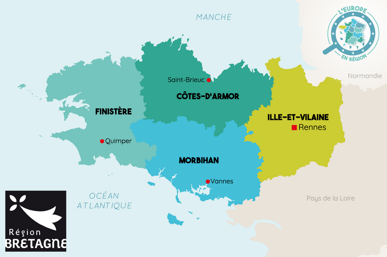
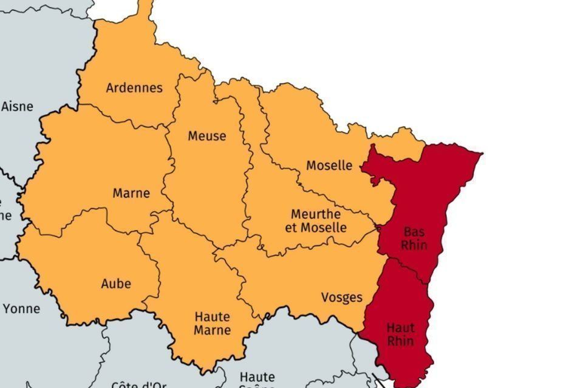
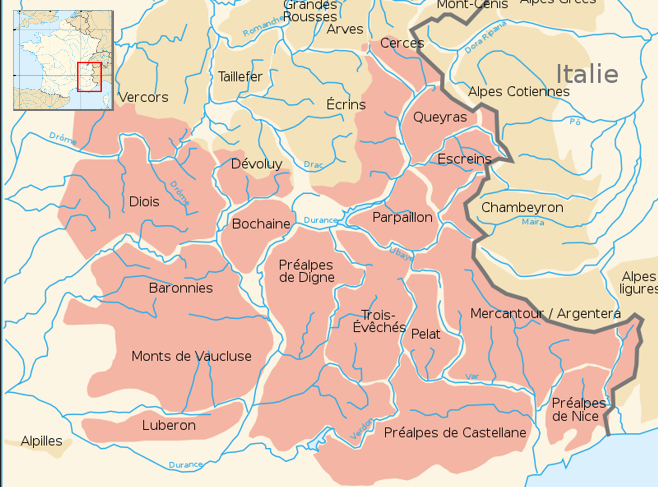
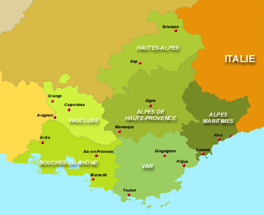

Bretagne (Morbihan)
Talus, landes et bois
- Genêt , Ajonc , Sapins , Erable
- Houx , Buis , Aubépine , Chêne vert
- Meurisier , Ronces , Géranium , Lierre
Prairie et jardin
- Thym , chèvre feuille, Tilleul , bruyère
- chardons , Acacia , Reine des près, Rhododendrons , Millepertuis
Verger
- Cerisier , Frambosier, Fraisier , Sureau
- Fruits rouges ,Pommier, Prunier,Poirier , Chataignier ,Noisetier
Prairies
- Pissenlits , Centaurée, Trèfle Blanc , Myosotis , Plantains, Poacées
- Ombéllifères (carotte et fenouil sauvages)
Champs et prairies
- Luzerne , Tournesol, Colza , Sarrasin
Nord Pas de Calais
Miel de printemps :
- Aubépine, pissenlit, saule marsault, érable, fleurs de verger, fleurs sauvage
Miel de fleurs d'été
- Ronce, trèfle, chardon, troène, tilleul
Miel d'aubépine
Miel de châtaignier
Sud-Ouest (Landes, Pays Basque, Gers et Vallée d'Aspe)
.jpg)
Miel de fleurs de printemps
(Mélange de plusieurs fleurs comme le pissenlit, le saule et l'acacia)
Miel d'acacia des Landes
(récolte fin avril début mai)
Miel de la forêt du Pays Basque
(récolte mai à juin)
Miel de Bourdaine des Landes
(floraison entre avril et juillet)
Miel de Bruyère Callue
(récolte en septembre-octobre) , (voir parfois mi-novembre suivant l'année)
Miel de Tournesol
(transhumance en juin, car la floraison se situe entre juillet et août)
(Ce miel se mélange très bien avec la bruyère ou le chataignier)
Miel de Bruyère Erica
(ce type de bruyère fleurit en été, contrairement à la bruyère Callue évoquée plus haut qui se récolte en automne)
Alsace
- Miel de fleurs
- Contient du nectar de fleurs des champs et d'arbres fruitiers (pommiers, cerisiers, pruniers, aubépine…)
Miel de forêt
- Ronces, Conifères, Chêne, hêtre et tilleul
Miel de châtaignier
Miel d'accacia
Miel de sapin
Région Parisienne
- Miel de printemps
- Colza, aubépine, pommier marronnier
- Miel d'acacia
- Miel toutes fleurs de fin de printemps
- Acacia et féverolle
Les apiculteurs de région parisienne s'adaptent à leur environnement
Ils peuvent soit s'installer près des forêts de Chantilly ou de Fontainebleau
ou le bois de Vincennes Ou cultiver sur des toits d'entreprises parisiennes
L'Essone est connue pour son miel de sarrasin et la Marne pour son miel de luzerne.
Régions de montagnes
Bruyère incarnate
- Alpine, bois de conifères, landes et rocailles jusqu'à 3000m. Fleurit de Mars à Juillet
Epilobe en épi
- Bas des prairies, lisières et bois clairs. Fleurit de Juin à Septembre)
Sapin
- Forêts entre 800 et 1900 m. Fleurit enMmai
Chataignier
- Pousse sur les sols acides de Corse et des Pyrénées orientales. Fleurit de juin à juillet
Germandrée des montagnes
- Pousse sur les rochers ou la pelouse calcair. Fleurit de Mai à Août
Rhododentron
- Pousse que sur des sols calcaire. Fleurit de Juin à Juillet
Serpollet
- Aime la rocaille, l'herbe et les broussaille. Pousse jusqu'à 3000m . Fleurit de Juin à Septembre
Point fort des montagnes
- Peu de champs donc peu de pesticide
- Grande diversité de fleurs dans la nature s
Inconvénients
Floraisons intenses mais de courtes durée (fleurs toute l'année sauf durant l'hiver qui est souvent enneigé)
Pour que les abeilles survivent à l'hiver, il faut faire une transhumance…
Les abeilles n'aiment pas le froid (l'hiver, mais aussi celui des fortes altitudes)
Région PACA
Miels plus confidentiels :
sarriette, arbousiers, thym, callune
Miel de romarin
La vallée du Rhône est réputé pour son miel d'acacia
Miels de montagne (alpes du Sud)
Miel de framboisier, de thym serpolet, de rhodendendron
Miel de grandes transhumances
Miel d'Acacia, de Sapin, de Chataignier et de tilleul